креатив
/ брендинг / продакшн / мультимедиа
00.0
на столе
0
/
0
Высыпь все
правки
на стол
и возвращайся к работе
01.1
Хватай папку
01.2
Переворачивай и тряси
01.3
Бери за дно — так быстрее
ООО «РГБИ»
· креативное агентство с собственным CG-продакшном
@hellorgby
Клиент
сейчас
хватай и тяни
мини-игра «Вытряхни правки»
все правки на столе
0.0
с
что сегодня прислал клиент
Ещё раз
Поделиться
Сыграй:
Игру сделали в RGBY. Правки вносим быстро.
@hellorgby
· 8 804 700 73 70